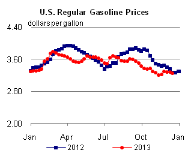
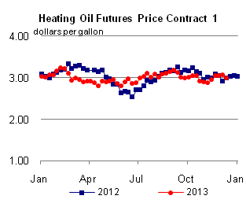

Released: December 18, 2013
Next Release: December 27, 2013
U.S. gasoline exports reshape trade flows in the Atlantic Basin
Gasoline trade flows in the Atlantic Basin are changing. Access to less-expensive crude oil and natural gas is making U.S. refineries more competitive, boosting refinery runs and putting Gulf Coast refineries at an advantage to supply Atlantic Basin gasoline demand. With U.S. gasoline demand mostly declining or flat, Gulf Coast refineries are increasing supply to markets in Latin America and West Africa and redrawing the map of Atlantic gasoline flows.
Price differences among the U.S. East Coast (PADD 1), U.S. Gulf Coast (PADD 3), and Europe determine gasoline flows in the Atlantic Basin. With U.S. East Coast demand exceeding available domestic sources of supply given existing infrastructure and regulations, the marginal barrel of gasoline supplied to the East Coast is imported. Historically, much of this supply has come from refineries in Europe.
European refineries were originally built to maximize gasoline production, but European diesel demand has grown much more quickly than gasoline demand, in part due to policies in many European countries favoring diesel-fueled cars, which have steadily increased the diesel share of motor fuel. This shift in demand has led Europe to export large amounts of gasoline and to import substantial volumes of diesel. A typical trade pattern has been to ship cargoes of gasoline from Europe to the U.S. East Coast, and to return to Europe with a cargo of diesel from the U.S. Gulf Coast. This flow, also known as the trans-Atlantic arbitrage, is made possible when the price of gasoline in New York Harbor is greater than the price of gasoline at Europe's main oil trading hub at Amsterdam-Rotterdam-Antwerp (ARA) plus the cost of freight, or when U.S. Gulf Coast diesel prices are sufficiently discounted to ARA prices to cover the cost of shipping to Europe.
{kind=link}
{kind=link}
Before 2012, Atlantic Basin gasoline trade was fairly predictable. Cargoes from Europe, Canada, and the Caribbean were exported to the U.S. East Coast (Figure 1). Additionally, European cargoes were supplied to Africa and Latin America. The United States also exported more modest amounts of gasoline from the Gulf Coast to Latin America, mostly Mexico.
However, these patterns are changing. Increased global demand and higher prices for diesel fuel have increased refining margins, encouraging U.S. refineries to increase crude runs to record levels to maximize diesel production. High refinery runs have also increased gasoline production at a time when U.S. consumption is mostly declining or flat due to vehicle efficiency gains, resulting in high gasoline inventories and lower prices.
{kind=link}
As a result, U.S. refineries have become more active participants in the Atlantic Basin gasoline market. Average U.S. Gulf Coast exports to Latin America for the period January through September increased from 74,000 barrels per day (bbl/d) in 2011 to 96,000 bbl/d in 2012, and have averaged 105,000 bbl/d in 2013. In addition, exports of gasoline from the United States to West Africa have increased significantly. Exports to West Africa averaged just 6,000 bbl/d in 2012, but thus far in 2013 have averaged 26,000 bbl/d, with August 2013 setting the highest export level on record to West Africa at 53,000 bbl/d (Figure 2). The increase in exports to West Africa, a market traditionally supplied by Europe, signals the competitiveness of U.S. gasoline exports in new markets. Despite the significant growth in exports, the East Coast is also still a significant importer of gasoline as a result of capacity constraints on product pipelines serving the region from the Gulf Coast and the high cost of coastwise shipments between U.S. ports. In September, the latest month for which data are available, the East Coast imported 501,000 bbl/d of gasoline.
Gasoline and diesel fuel prices both slide again
The U.S. average retail price of regular gasoline decreased three cents to $3.24 per gallon as of December 16, 2013, two cents lower than last year at this time. Prices decreased in all regions of the nation, with the largest decrease coming on the Gulf Coast, where the price was down six cents to $3.05 per gallon. The Midwest price dropped five cents to $3.08 per gallon, and the Rocky Mountain price was $3.06 per gallon, two cents less than last week. The East and West Coast prices both fell a penny, to $3.37 per gallon and $3.47 per gallon, respectively.
The national average diesel fuel price decreased one cent to $3.87 per gallon, seven cents lower than last year at this time. Prices increased less than one cent on the East Coast and in the Rocky Mountains, to $3.92 per gallon and $3.85 per gallon, respectively, while decreasing in the rest of the nation. The Midwest price declined two cents to $3.85 per gallon. The Gulf and West Coast prices were $3.77 per gallon and $3.98 per gallon, respectively, both down a penny.
Propane inventories fall
U.S. propane stocks fell by 2.7 million barrels to end at 50.0 million barrels last week, 19.3 million barrels (27.8%) lower than a year ago. Gulf Coast regional inventories dropped by 1.2 million barrels, and Midwest inventories decreased by 1.0 million barrels. East Coast inventories decreased by 0.3 million barrels, and Rocky Mountain/West Coast inventories dropped by 0.2 million barrels. Propylene non-fuel-use inventories represented 6.5% of total propane inventories.
Residential propane prices make noticeable gains, while heating oil prices hold steady
Residential heating oil prices decreased by less than 1 cent per gallon to $3.95 per gallon during the period ending December 16, 2013. This is almost 1 cent per gallon lower than last year's price at this time. Wholesale heating oil prices decreased 6 cents per gallon last week to $3.07 per gallon.
The average residential propane price increased 9 cents per gallon last week to $2.71 per gallon, almost 47 cents per gallon higher than the same period last year. Wholesale propane prices increased 11 cents per gallon to nearly $1.64 per gallon as of December 16, 2013.
Text from the previous editions of This Week In Petroleum is accessible through a link at the top right-hand corner of this page.
|  | |||||||
| Retail Data | Change From Last | Retail Data | Change From Last | ||||
| 12/16/13 | Week | Year | 12/16/13 | Week | Year | ||
| Gasoline | 3.239 | Heating Oil | 3.952 | ||||
| Diesel Fuel | 3.871 | Propane | 2.712 | ||||
|
 | ||||||||||||||||||||||||||
| *Note: Crude Oil Price in Dollars per Barrel. | |||||||||||||||||||||||||||
| Stocks Data | Change From Last | Stocks Data | Change From Last | ||||
| 12/13/13 | Week | Year | 12/13/13 | Week | Year | ||
| Crude Oil | 372.3 | Distillate | 116.0 | ||||
| Gasoline | 220.5 | Propane | 49.958 | ||||